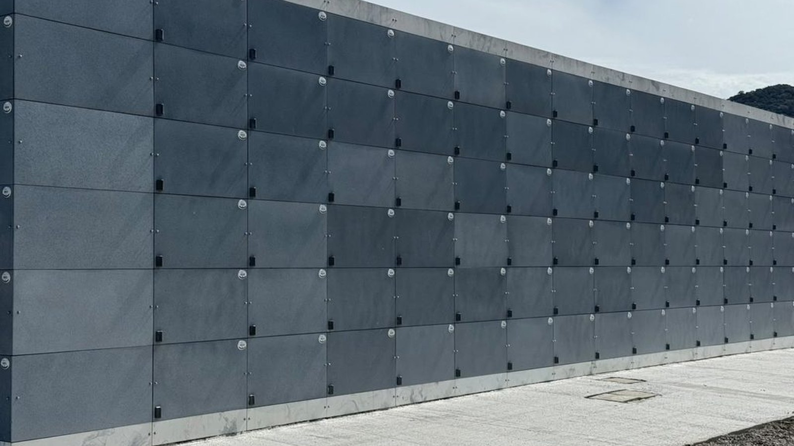

Itapema · Infraestrutura
Itapema · InfraestruturaA emenda que chega ao plenário de Itapema troca a prioridade da rua sem asfalto por “sempre que possível”, e o projeto espera votação há 217 dias
Outra regra municipal que mexe com potencial construtivo e contrapartida.
O Decreto 226, de 3 de setembro, declara de utilidade pública 47.796 m² vizinhos ao Cemitério Municipal, no Alto São Bento, e manda pagar a indenização em Transferência de Potencial Construtivo, sem fixar nenhum valor em reais. Baixamos o decreto inteiro no Diário Oficial: tirada a área de preservação e aplicado um desconto de 40%, a área indenizável fica em 16.557,6 m². Em setembro a FAACI também liberou a licença de operação do Cemitério Vertical, de 600 gavetas. A nota de preparativos para o Finados, publicada nesta quarta, não cita nenhum dos dois atos.
Em 30 segundos · Modo de Leitura, formato original Santa Informa
O cemitério de Itapema vai crescer.
O ato é o Decreto 226.
Ele é de 3 de setembro de 2026.
Saiu no Diário Oficial em 4 de setembro.
Faz 56 dias.
Ele declara de utilidade pública 47.796 m².
É o terreno vizinho ao cemitério.
Fica no bairro Alto São Bento.
O cemitério é na Rua 812, nº 151.
Desse total, 20.200 m² são de preservação permanente.
Essa parte não é indenizada.
Sobram 27.596 m² como área desapropriada.
Sobre ela entra um desconto de 40%.
O desconto é porque o terreno é área de posse.
Posse não é a mesma coisa que escritura.
A área indenizável final fica em 16.557,6 m².
O decreto não traz valor em reais.
O pagamento é em potencial construtivo.
Quer dizer: direito de construir a mais em outro terreno.
A regra é a Lei Complementar 143/2024.
Quem emite o certificado é o próprio Município.
Tem um processo judicial junto.
É uma ação de usucapião de 2008.
Ela corre na 2ª Vara Cível de Itapema.
A autora é a empresa Hotéis Itapema Ltda.
O Município vai assumir essa ação.
São 18 anos de processo.
Do lado do cemitério existe o Cemitério Vertical.
Ele fica na Rua 812, nº 134.
São 600 gavetas.
Cada gaveta fica ocupada até 3 anos.
Depois os restos vão para o ossuário.
A Prefeitura estima 20 anos de demanda atendida.
A FAACI deu a licença de operação dele.
Foi na segunda quinzena de setembro.
A publicação saiu em 2 de outubro.
A licença vale 48 meses.
Ela é da modalidade corretiva.
O Finados é na segunda, 2 de novembro.
Dá para limpar e enfeitar o túmulo até domingo, 1º.
No dia haverá banheiro químico e bebedouro.
O portão fica aberto depois das 18h.
Fecha de madrugada.
Este ano o cemitério ganhou câmeras.
A nota do Finados não fala do decreto.
Nem da licença.
InfraestruturaPublicada em Redação Santa Informa

A Prefeitura publicou nesta quarta, 28 de outubro, a nota de preparativos do Cemitério Municipal para o Finados, que cai na segunda, 2 de novembro. Fomos aos atos oficiais sobre o mesmo cemitério e achamos dois que a nota não cita: o decreto que reserva 47.796 m² ao lado dele e a licença de operação do Cemitério Vertical.
O Decreto 226 é de 3 de setembro e saiu no Diário Oficial dos Municípios no dia 4, há 56 dias. O artigo 1º declara de utilidade pública, para desapropriação amigável ou judicial, 47.796 m² de cadastro imobiliário nº 53983. Daí a conta cai em três degraus. O parágrafo 2º tira 20.200 m² de Área de Preservação Permanente, fora da indenização. O parágrafo 3º registra área efetivamente desapropriada de 27.596 m². O parágrafo 4º aplica sobre ela desconto de 40%, por ser área de posse e não propriedade registrada, e chega aos 16.557,6 m² indenizáveis. O artigo 4º diz para que serve: ampliar o cemitério da Rua 812, nº 151.
O artigo 2º é o que mais muda a leitura do ato. A indenização sai por Transferência de Potencial Construtivo, nos termos da Lei Complementar municipal nº 143, de 30 de dezembro de 2024. Em português: em vez de reais, quem entrega o terreno ganha o direito de construir mais metros em outro ponto da cidade, por um certificado que o Município emite. O decreto não traz valor nem diz quantos metros a troca vale.
O artigo 3º trata de o terreno ser área de posse: o Município vai assumir a ação de usucapião nº 0005537-69.2008.8.24.0125, na 2ª Vara Cível da Comarca de Itapema, que tem como autora a empresa Hotéis Itapema Ltda. O número indica ajuizamento em 2008, 18 anos de tramitação. O decreto não diz em que fase o processo está nem que prazo a Prefeitura estima.
Ao lado, na Rua 812, nº 134, fica o Cemitério Vertical. A nota descreve a estrutura: 600 gavetas, ocupação de até 3 anos cada, com os restos indo depois para o ossuário, e estimativa de atender a cidade por cerca de 20 anos. O que ela não conta é que a FAACI publicou em 2 de outubro, na lista de licenças concedidas entre 16 e 30 de setembro, a Licença Ambiental de Operação do prédio, processo Sinfat Municípios nº 125745/2026, válida por 48 meses. Saiu na modalidade corretiva, e a publicação não explica por quê.
Nada disso muda o Finados. Pela nota, a limpeza e a ornamentação dos túmulos vão até domingo, 1º de novembro, e na semana as intervenções param. No dia 2 haverá banheiros químicos e bebedouros, com equipe recolhendo resíduos. O portão fica aberto depois das 18h e fecha de madrugada. A manutenção anual trouxe pintura, reparos e limpeza, e neste ano o cemitério ganhou câmeras. A Prefeitura pede que se evitem recipientes com água parada, por causa da dengue.
O resumo de 30 segundos está no topo e a versão completa é o texto acima. Aqui ficam as três leituras da casa sobre o mesmo assunto.
Clara, a otimista
Cemitério é daquelas coisas da cidade que ninguém olha enquanto funciona. Só vira assunto no dia em que falta lugar, e aí já é tarde, porque não existe solução rápida para isso. Itapema está fazendo o contrário: reservou o terreno vizinho por decreto, levantou o Cemitério Vertical e tirou a licença. É planejamento chato, feito com antecedência, do tipo que não rende foto bonita.
E tem a parte do bolso. Pagar em potencial construtivo quer dizer que a conta não sai do caixa da Prefeitura agora, num ano em que a cidade tem obra, temporada e festa para bancar. O terreno entra, o dinheiro fica. Para quem vai ao Alto São Bento na segunda levar flor, nada disso aparece. Mas é o motivo de o lugar ainda ter espaço daqui a dez ou vinte anos.
Seu Prudêncio, o criterioso
Merece atenção a aritmética do decreto. Ele trabalha com três números para o mesmo negócio: 47.796 m² declarados, 27.596 m² efetivamente desapropriados e 16.557,6 m² indenizáveis. Cada degrau tem explicação escrita, e até aí tudo bem. O que falta é a frase final dizendo com qual área o Município fica, e o que acontece com os 20.200 m² de preservação permanente. Quem lê de boa-fé termina sem saber o tamanho do cemitério de amanhã.
A segunda coisa é o preço. O pagamento sai em potencial construtivo, pela Lei Complementar 143/2024, e o decreto não diz quantos metros de construção valem os 16.557,6 m² de terreno. O laudo de avaliação é citado como parte integrante do ato, mas não saiu publicado junto. Uma sugestão útil é publicar o laudo e o certificado emitido, porque potencial construtivo também é patrimônio público, só que em forma de direito de construir. Vale acompanhar ainda a ação de usucapião de 2008, que o Município vai assumir: dezoito anos é tempo que pede uma estimativa de prazo.
Dito isso, o mérito é claro e precisa ser registrado. Ampliar cemitério antes de ele lotar, com a área vizinha reservada em decreto e a estrutura vertical já licenciada, é fazer na ordem certa. Município que resolve isso com antecedência poupa a própria população de um problema sem saída.
Caco, o sarcástico
Li o decreto inteiro e saí com três áreas diferentes na cabeça. Começa com 47.796, cai para 27.596, termina em 16.557,6. Cada corte tem parágrafo próprio explicando, o que é mais do que a maioria dos documentos oferece, e mesmo assim eu precisei de papel e caneta. Decreto que exige rascunho é um gênero literário.
Aí chego no artigo 3º e descubro que vem um processo de 2008 no pacote. Dezoito anos. Tem gente em Itapema que nasceu, estudou, se formou e arrumou emprego no tempo em que esse processo está em tramitação. A Prefeitura vai assumir a ação, o que é a coisa certa a fazer, mas convenhamos: herdar processo judicial é o presente que ninguém pede na lista de casamento.
Reclamação registrada. Mas tá bom porque é progresso: a cidade está cuidando do assunto com anos de antecedência, o muro de gavetas já está de pé e licenciado, e o terreno do lado está reservado no papel. Se tem uma fila em Itapema que eu não tenho pressa nenhuma de entrar, é essa. Que continue comprida.
Fontes: A área de 47.796 m², o cadastro imobiliário nº 53983, os 20.200 m² de Área de Preservação Permanente, os 27.596 m² de área efetivamente desapropriada, o desconto de 40% por se tratar de área de posse, a área final indenizável de 16.557,6 m², o pagamento por Transferência de Potencial Construtivo nos termos da Lei Complementar nº 143, de 30 de dezembro de 2024, a ação de usucapião nº 0005537-69.2008.8.24.0125 na 2ª Vara Cível da Comarca de Itapema tendo como autora a empresa Hotéis Itapema Ltda, a citação da Portaria nº 72/2025 que instituiu a Comissão de Avaliação Imobiliária e a destinação à ampliação do Cemitério Municipal da Rua 812, nº 151 estão no Decreto nº 226, de 3 de setembro de 2026, publicado pela Prefeitura de Itapema no Diário Oficial dos Municípios de Santa Catarina em 4 de setembro de 2026. Baixamos o PDF do ato e lemos o texto integral em 29 de outubro de 2026. A Licença Ambiental de Operação na modalidade corretiva, o processo Sinfat Municípios nº 125745/2026, a validade de 48 meses e o endereço do Cemitério Vertical na Rua 812, nº 134, estão na publicação das licenças ambientais concedidas pela FAACI no período de 16 a 30 de setembro de 2026, no Diário Oficial de 2 de outubro de 2026, edição 5258, também aberta por nós em PDF nesta data. A descrição do Cemitério Vertical com 600 gavetas, a ocupação de até três anos, o ossuário, a estimativa de cerca de 20 anos de demanda, o prazo até domingo para limpeza e ornamentação dos túmulos, os banheiros químicos e bebedouros no dia 2, o portão aberto após as 18h, a instalação de câmeras, a vistoria semanal contra a dengue e as falas do secretário de Obras Jean Idimar estão na nota Cemitério municipal de Itapema recebe preparativos para o Dia de Finados, publicada pela Prefeitura de Itapema em 28 de outubro de 2026 e aberta por nós em 29 de outubro. A descrição da Transferência de Potencial Construtivo com emissão de Certificado de Transferência de Potencial Construtivo pelo Município aparece também no Decreto nº 234, de 8 de outubro de 2026, da mesma Prefeitura. A contagem dos 56 dias desde a publicação do decreto, os 18 anos de tramitação da ação de usucapião e a reunião dos três atos num texto só são nossas. A foto do topo é da Prefeitura de Itapema e mostra o muro de gavetas do Cemitério Vertical; recortamos o enquadramento para o formato da página.
Itapema · InfraestruturaOutra regra municipal que mexe com potencial construtivo e contrapartida.
 Itapema · Meio Ambiente
Itapema · Meio AmbienteA FAACI, que licenciou o Cemitério Vertical, em outra frente.
 Itapema · Infraestrutura
Itapema · InfraestruturaOutro decreto de Itapema que depende de terreno de terceiro.